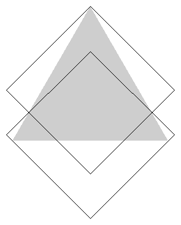
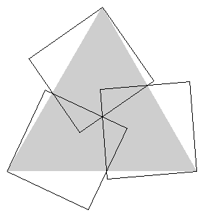
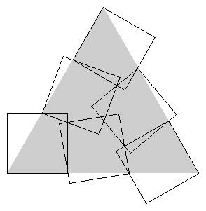

Problem J
Triangle Covering
Input:
standard input
Output: standard output
Time Limit: 5 seconds
Memory Limit: 32 MB
Triangle covering problem is a very interesting. Some people have done interesting research on this topic. In this problem you are asked to solve some elementary covering problems. The basic idea of covering problem is to find out the smallest size of a particular shape that can entirely cover another particular shape. Covering problems have many practical applications such as finding smallest possible square sized covers for a round table. In some ways covering problems are similar to packing problems but they have significant differences also. In this problem you are asked to find out the maximum possible size of an equilateral triangle which can be covered by 2, 3, 4 or 6 squares of equal size. The following pictures show how these coverings can be done. You can assume that
a) When a picture looks exactly symmetric along a certain axis they are actually symmetric.
b) When three or more lines appear coincident they are actually coincident
c) When a part of a figure looks exactly similar to another part they are actually similar.
|
 |
 |
|
Fig 1: Covering with two squares |
Fig 2: Covering with three squares |
|
|
 |
|
Fig 3: Covering with four squares |
Fig 4: Covering with six squares |

Input
First line of the input file contains a single integer N(N<=5000) which indicates how many
sets of input are there in the input file. Each of the next N lines makes a set of input.
Each line contains a single floating point number S(0<=S<=10000) which indicates the
side of the squares that will cover the equilateral triangle.
Output
For
each set of input
produce one line of output. So the output file contains N lines of output.
Each
line contains four floating point numbers T2,
T3, T4 and T6.
Each floating point number has ten digits after the decimal point.
Sample Input
5
0.000000001
0.000000002
0.000000003
0.000000004
0.000000005
Sample Output
0.0000000013
0.0000000021 0.0000000023 0.0000000032
0.0000000026
0.0000000042 0.0000000046 0.0000000063
0.0000000039
0.0000000063 0.0000000069 0.0000000095
0.0000000053
0.0000000084 0.0000000092 0.0000000127
0.0000000066
0.0000000105 0.0000000115 0.0000000158
(Problem setter: Shahriar Manzoor, CSE Dept,
(My thanks goes to Eric Friedman and David Cantrell for their wonderful research works.)
“Everyone in this world is different, but the people who are truly brave
enough to show their differences are considered embarassing
or not normal. Maybe, the 'normal' people in this world
are just scared to show who they really are.”